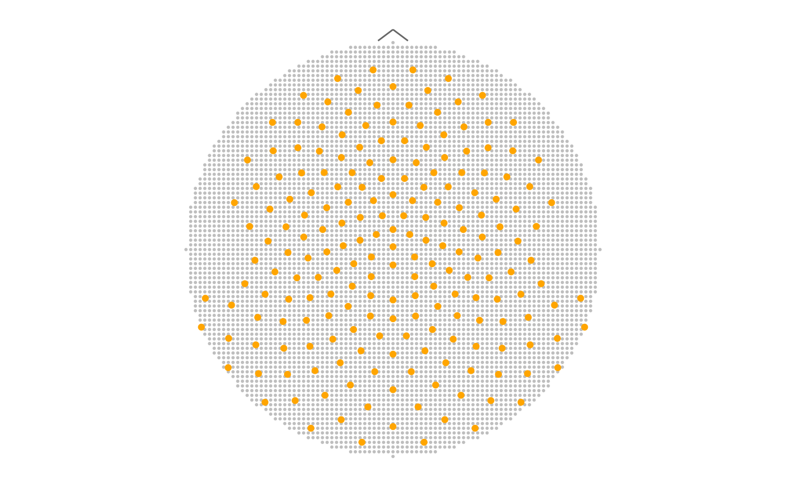
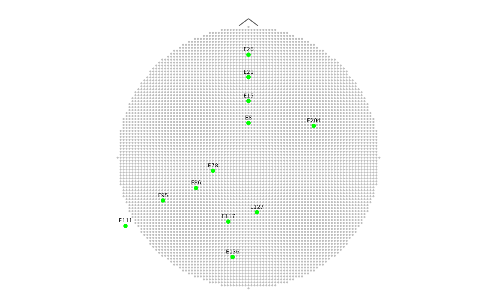
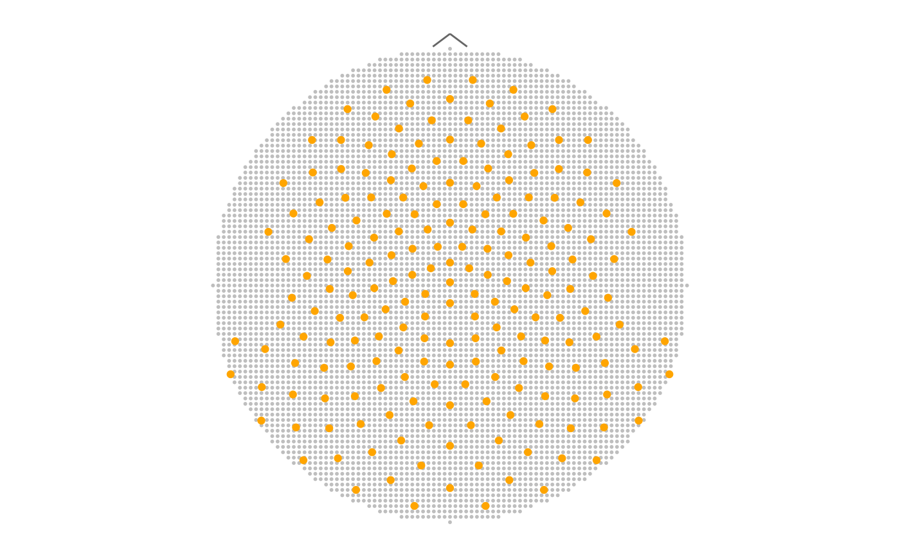
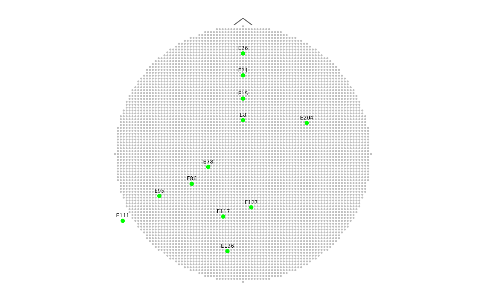

Plot point mesh
plot_point_mesh.RdPlots a mesh of points (typically from point_mesh, but not necessary) as either a 2D ggplot or 3D rgl plot depending on mesh dimension.
Usage
plot_point_mesh(
mesh,
sensors = TRUE,
label_sensors = FALSE,
sensor_select = NULL,
names_vec = NULL,
col = "gray",
cex = 0.4,
col_sensors = "green",
own_coordinates = NULL
)Arguments
- mesh
A data frame or tibble with cartesian coordinates of point mesh to plot. It could be
D2orD3element of output frompoint_meshfunction or any data frame (or tibble) with named x and y (x, y and z, respectively) columns. See Details for more information.- sensors
A logical value indicating whether the sensor locations should also be plotted (default value is
TRUE).- label_sensors
A logical value indicating whether the sensor labels should also be plotted (default value is
FALSE).- sensor_select
Optionally, a vector with sensor labels selected from the template during a mesh building. It must be the same as the vector used to create the mesh that the function is supposed to draw, otherwise the final plot will be incorrect.
- names_vec
A character vector of labels matching rows in
own_coordinates. The argument is required when usingown_coordinatestogether with settinglabel_sensors = TRUE, otherwise is optional.- col
The colour of mesh points (default colour is gray).
- cex
The
cex(size) argument for points of the mesh.- col_sensors
The colour of sensor locations points (default colour is green).
- own_coordinates
A data frame or tibble with coordinates of the sensor locations (matching the dimensionality of mesh and containing appropriate coordinate columns). If the value is
NULLandsensorsis set toTRUE, the HCGSN256 template is used.
Details
Please follow the instructions below when entering own_coordinates:
The output plot is designed with frontal part of the brain above and occipital part of the brain bottom. The orientation of own_coordinates should be consistent with this. In other case the results could be distorted.
For displaying 3D rgl plot, the own_coordinates must contain the x, y and z coordinates of the sensors, otherwise the function does not work correctly.
The order of elements in names_vec must be consistent with elements of own_coordinates.
When both names_vec and own_coordinates are provided, it is essential that the length of names_vec matches the number of rows in own_coordinates, otherwise the names are not plotted (despite the setting label_sensors = TRUE).
Examples
# 2D polygon point mesh with all sensors from the HCGSN256 template
# and default settings
# Note: for nice plot we recommend set par(mar = c(0,0,0,0))
M <- point_mesh(n = 4000, template = "HCGSN256")
#> Warning: The X_P matrix is ill-conditioned (kappa = 1.76e+12 ) and the results from solve() could be inaccurate.
plot_point_mesh(M$D2)
 ## Note: the example opens a rgl 3D viewer
# Plotting 3D polygon point mesh with default settings
rgl::open3d()
plot_point_mesh(M$D3)
# Plotting 2D circle point mesh with sensors from epochdata as orange points
sensors <- unique(epochdata$sensor)
M <- point_mesh(dim = 2, n = 4000, template = "HCGSN256",
sensor_select = sensors, type = "circle")
plot_point_mesh(M$D2, sensor_select = sensors, col_sensors = "orange")

# Plotting the same mesh with marking only midline electrodes
midline <- HCGSN256$D2[c(8, 15, 21, 26, 78, 86, 95, 111, 117, 127, 136, 204),]
names_vec <- HCGSN256$D2$sensor[c(8, 15, 21, 26, 78, 86, 95, 111, 117, 127, 136, 204)]
plot_point_mesh(M$D2, label_sensors = TRUE, names_vec = names_vec, own_coordinates = midline)

## Note: the example opens a rgl 3D viewer
# Plotting 3D polygon point mesh with default settings
rgl::open3d()
plot_point_mesh(M$D3)
# Plotting 2D circle point mesh with sensors from epochdata as orange points
sensors <- unique(epochdata$sensor)
M <- point_mesh(dim = 2, n = 4000, template = "HCGSN256",
sensor_select = sensors, type = "circle")
plot_point_mesh(M$D2, sensor_select = sensors, col_sensors = "orange")

# Plotting the same mesh with marking only midline electrodes
midline <- HCGSN256$D2[c(8, 15, 21, 26, 78, 86, 95, 111, 117, 127, 136, 204),]
names_vec <- HCGSN256$D2$sensor[c(8, 15, 21, 26, 78, 86, 95, 111, 117, 127, 136, 204)]
plot_point_mesh(M$D2, label_sensors = TRUE, names_vec = names_vec, own_coordinates = midline)
